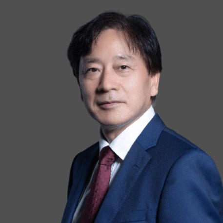
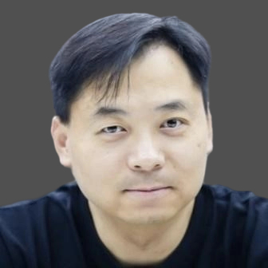
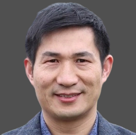
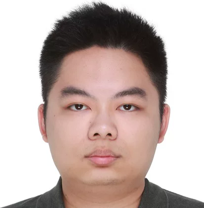
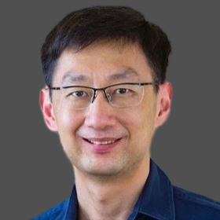
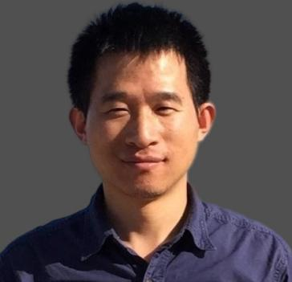
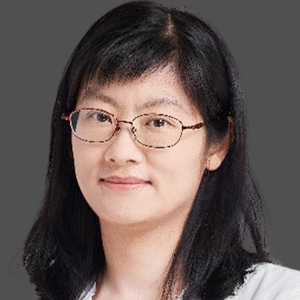
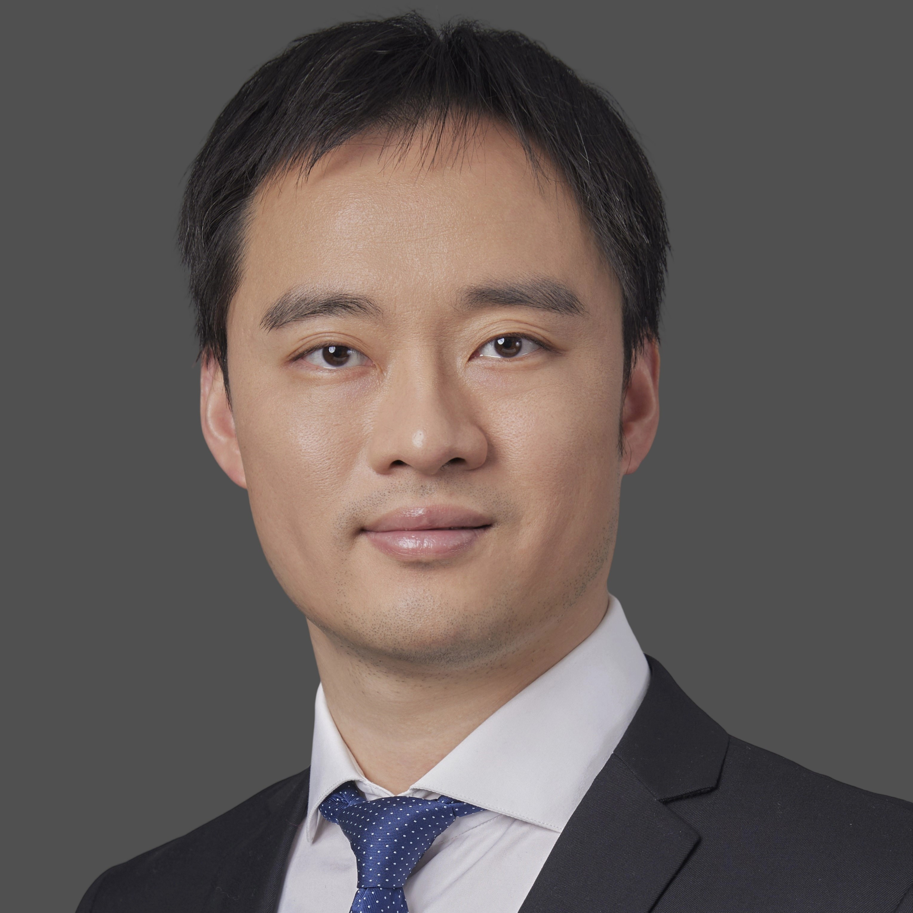

Speakers
(listed by last name alphabetically)
Keynote Speakers
-
 Tianyou ChaiIEEE Life FellowNortheastern University, ChinaTianyou Chai received the Ph.D. degree in control theory and engineering in 1985 from Northeastern University, Shenyang, China, where he became a Professor in 1988. He is the founder and Director of the Center of Automation, which became a National Engineering and Technology Research Center and a State Key Laboratory. He is a member of Chinese Academy of Engineering, IFAC Fellow and IEEE Fellow. He has served as director of Department of Information Science of National Natural Science Foundation of China from 2010 to 2018.
Tianyou ChaiIEEE Life FellowNortheastern University, ChinaTianyou Chai received the Ph.D. degree in control theory and engineering in 1985 from Northeastern University, Shenyang, China, where he became a Professor in 1988. He is the founder and Director of the Center of Automation, which became a National Engineering and Technology Research Center and a State Key Laboratory. He is a member of Chinese Academy of Engineering, IFAC Fellow and IEEE Fellow. He has served as director of Department of Information Science of National Natural Science Foundation of China from 2010 to 2018.
His current research interests include modeling, control, optimization and integrated automation and intelligence of complex industrial processes.He has published 397 peer reviewed international journal papers，including 273 IEEE&IFAC papers. His paper titled Hybrid intelligent control for optimal operation of shaft furnace roasting process was selected as one of three best papers for the Control Engineering Practice Paper Prize for 2011-2013. He has developed control technologies with applications to various industrial processes. For his contributions, he has won 5 prestigious awards of National Natural Science, National Science and Technology Progress and National Technological Innovation, the 2007 Industry Award for Excellence in Transitional Control Research from IEEE Multiple-conference on Systems and Control, and the 2017 Wook Hyun Kwon Education Award from Asian Control Association.BiographyTopic & AbstractTitleIntelligent Decision and Control Integrating System Based on End-edge-cloud Collaboration端边云协同的智能决策与控制一体化系统AbstractTo address the challenges that online optimization of operational decision-making and control in complex industrial systems cannot be realized, this talk proposes a unified structure and algorithm for integrated operational optimization of decision-making and control, by combining control, optimization, and prediction with AI technology. It also proposed a parameter self-optimizing and self-learning algorithm for operational decision-making and control integrating systems, by combining mechanism analysis with deep learning, and digital twin with reinforcement learning. Based on the tight conjoining of and coordination between the end-edge-cloud collaboration technology of Industrial Internet and PLC control system, an intelligent decision-making and control integrating system based on end-edge-cloud collaboration is developed. The system includes the end serving as an actual operational optimization decision-making and control system at the industrial site, as well as a cloud-edge collaborative parameter self-learning and self-optimizing system in digital space that operates in coordination with the end. The system has been successfully applied in the energy intensive equipment—fused magnesium furnace and achieved remarkable results in the reduction of carbon emission.本报告针对复杂工业系统运行决策与控制无法在线优化的挑战难题，将控制、优化与预测和AI技术相结合，提出了运行优化决策与控制一体化的统一结构和算法。机理分析与深度学习、数字孪生与强化学习相结合，提出了优化决策与控制一体化系统参数自优化自学习算法。将工业互联网端边云协同技术和PLC管理控制系统深度融合与协同，研发了端边云协同的优化决策与控制一体化智能系统，包括端的实际优化运行决策与控制系统和数字空间的与端系统协同运行的云边协同参数自学习自优化系统。该系统成功应用于重大耗能设备—电熔镁炉，取得低碳运行的显著效果。 -
 Wolfgang MaassGraz University of Technology, AustriaPhd in Mathematics at the Ludwig-Maximilians-Universitaet in Munich.1979 - 1984 research at MIT, the University of Chicago, and the University of California at Berkeley as Heisenberg-Fellow of the Deutsche Forschungsgemeinschaft.1982 - 1986 Associate Professor and 1986 - 1993 Professor of Computer Science at the University of Illinois in Chicago.Since 1991 Professor of Computer Science at the Graz University of Technology in Austria.Sloan Fellow at the Computational Neurobiology Lab of the Salk Institute (La Jolla, USA) during 1997/98.2002/3 and 2012 Visiting Professor at the Brain-Mind Institute, EPFL, Lausanne, Switzerland.Since 2005 Adjunct Fellow of the Frankfurt Institute of Advanced Studies(FIAS)2008 - 2012 Member of the Board of Governors of the International Neural Network Society.Since 2013 Member of the Academia Europaea2018: Co-Organizer of the Special Semester "The Brain and Computation" at the Simons Institute, University of California at Berkeley Since 2023: ELLIS Fellow, and Director of the ELLIS unit Graz (ELLIS = European Lab for Learning and Intelligent Systems)BiographyTopic & AbstractTitleNew ingredients for brain-inspired AIAbstractI will discuss some recently discovered brain mechanisms that suggest new brain-inspired AI approaches to planning, problem solving, binding, and compositional computing. This was elucidated in recent collaborations with very talented junior researchers from China. Details can be found in our first publications on these results:Chen, G., Scherr, F., & Maass, W. (2023). Data-based large-scale models provide a window into the organization of cortical computations. bioRxivStöckl, C., Yang, Y., & Maass, W. (2024). Local prediction-learning in high-dimensional spaces enables neural networks to plan. Nature CommunicationsWu, Y., & Maass, W. (2025). A simple model for Behavioral Time Scale Synaptic Plasticity (BTSP) provides content addressable memory with binary synapses and one-shot learning. Nature CommunicationsYu, C., Wu, Y., Wang, A., & Maass, W. (2025). Behavioral Time Scale Synaptic Plasticity (BTSP) endows Hyperdimensional Computing with attractor features. bioRxivLin, H., Yang, Y., Zhao, R., Pezzulo, G., & Maass, W. (2025). Neural sampling from cognitive maps supports goal-directed imagination and planning. bioRxiv
Wolfgang MaassGraz University of Technology, AustriaPhd in Mathematics at the Ludwig-Maximilians-Universitaet in Munich.1979 - 1984 research at MIT, the University of Chicago, and the University of California at Berkeley as Heisenberg-Fellow of the Deutsche Forschungsgemeinschaft.1982 - 1986 Associate Professor and 1986 - 1993 Professor of Computer Science at the University of Illinois in Chicago.Since 1991 Professor of Computer Science at the Graz University of Technology in Austria.Sloan Fellow at the Computational Neurobiology Lab of the Salk Institute (La Jolla, USA) during 1997/98.2002/3 and 2012 Visiting Professor at the Brain-Mind Institute, EPFL, Lausanne, Switzerland.Since 2005 Adjunct Fellow of the Frankfurt Institute of Advanced Studies(FIAS)2008 - 2012 Member of the Board of Governors of the International Neural Network Society.Since 2013 Member of the Academia Europaea2018: Co-Organizer of the Special Semester "The Brain and Computation" at the Simons Institute, University of California at Berkeley Since 2023: ELLIS Fellow, and Director of the ELLIS unit Graz (ELLIS = European Lab for Learning and Intelligent Systems)BiographyTopic & AbstractTitleNew ingredients for brain-inspired AIAbstractI will discuss some recently discovered brain mechanisms that suggest new brain-inspired AI approaches to planning, problem solving, binding, and compositional computing. This was elucidated in recent collaborations with very talented junior researchers from China. Details can be found in our first publications on these results:Chen, G., Scherr, F., & Maass, W. (2023). Data-based large-scale models provide a window into the organization of cortical computations. bioRxivStöckl, C., Yang, Y., & Maass, W. (2024). Local prediction-learning in high-dimensional spaces enables neural networks to plan. Nature CommunicationsWu, Y., & Maass, W. (2025). A simple model for Behavioral Time Scale Synaptic Plasticity (BTSP) provides content addressable memory with binary synapses and one-shot learning. Nature CommunicationsYu, C., Wu, Y., Wang, A., & Maass, W. (2025). Behavioral Time Scale Synaptic Plasticity (BTSP) endows Hyperdimensional Computing with attractor features. bioRxivLin, H., Yang, Y., Zhao, R., Pezzulo, G., & Maass, W. (2025). Neural sampling from cognitive maps supports goal-directed imagination and planning. bioRxiv -
 Xin YaoIEEE FellowLingnan University, Hong Kong SAR, ChinaXin Yao is the Vice President (Research and Innovation) and the Tong Tin Sun Chair Professor of Machine Learning at Lingnan University, Hong Kong SAR. He is an IEEE Fellow and was a Distinguished Lecturer of the IEEE Computational Intelligence Society (CIS). He served as the President (2014-15) of IEEE CIS and the Editors-in-Chief (2003-08) of IEEE Transactions on Evolutionary Computation. His major research interests include evolutionary computation, neural network ensembles, and multi-objective learning. His recent interests include online learning, class imbalance learning and trustworthy artificial intelligence. His work won the 2001 IEEE Donald G. Fink Prize Paper Award; 2010, 2016 and 2017 IEEE Transactions on Evolutionary Computation Outstanding Paper Awards; 2011 IEEE Transactions on Neural Networks Outstanding Paper Award; 2010 BT Gordon Radley Award for Best Author of Innovation (Finalist); and many other best paper awards at conferences. He received the 2012 Royal Society Wolfson Research Merit Award, the 2013 IEEE CIS Evolutionary Computation Pioneer Award, and the 2020 IEEE Frank Rosenblatt Award.BiographyTopic & AbstractTitleExplaining Explainable Artificial Intelligence (XAI)AbstractExplainable Artificial Intelligence (XAI) has been a hot topic in recent years. Many papers and books have been published by researchers and practitioners from different communities, addressing different aspects of XAI. However, different papers seem to focus on different definitions of explainability. It is not entirely clear what XAI really means. Firstly, this talk will try to clarify what XAI actually means to different people, at different times and for different purposes. In other words, the talk will first put XAI in a four dimensional space and characterise it in terms of explaining to whom, when, what and how. Secondly, after identifying the most popular XAI technique --- feature attribution explanation (FAE), we will illustrate how evolutionary multi-objective optimisation could be used naturally to enhance explainability of machine learning models. Thirdly, in the opposite direction, we will demonstrate how XAI techniques can be used to enhance the performance of evolutionary algorithms. There are interesting synergies between XAI and evolutionary computation techniques. Finally, this talk ends with some concluding remarks and future research directions.
Xin YaoIEEE FellowLingnan University, Hong Kong SAR, ChinaXin Yao is the Vice President (Research and Innovation) and the Tong Tin Sun Chair Professor of Machine Learning at Lingnan University, Hong Kong SAR. He is an IEEE Fellow and was a Distinguished Lecturer of the IEEE Computational Intelligence Society (CIS). He served as the President (2014-15) of IEEE CIS and the Editors-in-Chief (2003-08) of IEEE Transactions on Evolutionary Computation. His major research interests include evolutionary computation, neural network ensembles, and multi-objective learning. His recent interests include online learning, class imbalance learning and trustworthy artificial intelligence. His work won the 2001 IEEE Donald G. Fink Prize Paper Award; 2010, 2016 and 2017 IEEE Transactions on Evolutionary Computation Outstanding Paper Awards; 2011 IEEE Transactions on Neural Networks Outstanding Paper Award; 2010 BT Gordon Radley Award for Best Author of Innovation (Finalist); and many other best paper awards at conferences. He received the 2012 Royal Society Wolfson Research Merit Award, the 2013 IEEE CIS Evolutionary Computation Pioneer Award, and the 2020 IEEE Frank Rosenblatt Award.BiographyTopic & AbstractTitleExplaining Explainable Artificial Intelligence (XAI)AbstractExplainable Artificial Intelligence (XAI) has been a hot topic in recent years. Many papers and books have been published by researchers and practitioners from different communities, addressing different aspects of XAI. However, different papers seem to focus on different definitions of explainability. It is not entirely clear what XAI really means. Firstly, this talk will try to clarify what XAI actually means to different people, at different times and for different purposes. In other words, the talk will first put XAI in a four dimensional space and characterise it in terms of explaining to whom, when, what and how. Secondly, after identifying the most popular XAI technique --- feature attribution explanation (FAE), we will illustrate how evolutionary multi-objective optimisation could be used naturally to enhance explainability of machine learning models. Thirdly, in the opposite direction, we will demonstrate how XAI techniques can be used to enhance the performance of evolutionary algorithms. There are interesting synergies between XAI and evolutionary computation techniques. Finally, this talk ends with some concluding remarks and future research directions.
Invited Speakers
-

Yaochu JinIEEE FellowPresident for Publications of IEEE Computational Intelligence SocietyWestlake University, ChinaYaochu Jin obtained the BSc., MSc. and PhD degree all in automatic control from the Electrical Engineering Department, Zhejiang University, China, in 1988, 1991, and 1996, respectively, and the Dr.-Ing. from the Institute of Neuroinformatics, Ruhr-University Bochum, Germany in 2001. He is currently a Chair Professor of Artificial Intelligence with the School of Engineering, Westlake University. Before joining Westlake University, he was an Alexander von Humboldt Professor for Artificial Intelligence endowed by the German Federal Ministry of Education and Research, Bielefeld University, Germany from 2021 to 2023, and a Surrey Distinguished Chair Professor in Computational Intelligence, University of Surrey, Guildford, U.K., from 2010 to 2021. He was a “Finland Distinguished Professor” of University of Jyväskylä, Finland, and “Changjiang Distinguished Visiting Professor”, Northeastern University, China from 2015 to 2017. He is a Member of Academia Europaea and Fellow of IEEE.Biography
-

Dacheng TaoIEEE FellowNanyang Technological University, SingaporeDr Dacheng Tao is currently a Distinguished University Professor in the College of Computing & Data Science at Nanyang Technological University. He mainly applies statistics and mathematics to artificial intelligence and data science, and his research is detailed in one monograph and over 200 publications in prestigious journals and proceedings at leading conferences, with best paper awards, best student paper awards, and test-of-time awards. His publications have been cited over 112K times and he has an h-index 160+ in Google Scholar. He received the 2015 and 2020 Australian Eureka Prize, the 2018 IEEE ICDM Research Contributions Award, and the 2021 IEEE Computer Society McCluskey Technical Achievement Award. He is a Fellow of the Australian Academy of Science, AAAS, ACM and IEEE.Biography
-

Feng XiaRMIT University, AustraliaDr. Feng Xia is a Professor of Data Science & AI at RMIT University, Melbourne, Australia. He is/was Associate/Guest Editor of over 20 journals (e.g., TIST, TKDD, TOMM, TAI, TNNLS, TCSS, TITS, TETC, and TII). He has served as the General Chair, PC Chair, Area Chair, Workshop Chair, or Publicity Chair of over 30 conferences, and (Senior) PC Member of over 100 conferences (e.g., IJCAI, AAAI, ICLR, KDD, WWW/TheWebConf, and NetSci). Dr. Xia has authored/co-authored over 300 scientific papers in journals and conferences (such as IEEE TAI, TKDE, TNNLS, TC, TMC, TBD, TCSS, TNSE, TETCI, TETC, THMS, TVT, TITS, ACM TKDD, TIST, TWEB, TOMM; IJCAI, AAAI, NeurIPS, ICLR, KDD, WWW, MM, SIGIR, EMNLP, and INFOCOM). He was recognized as a Highly Cited Researcher (2019). Dr. Xia received a number of prestigious awards, including e.g. IEEE Transactions on Neural Networks and Learning Systems Outstanding Associate Editor of 2023-2024, IEEE Vehicular Technology Society 2020 Best Land Transportation Paper Award, ACM/IEEE JCDL 2020 The Vannevar Bush Best Paper Honorable Mention, and WWW 2017 Best Demo Award. He has been invited as Keynote Speaker at several international conferences, and delivered a number of Invited Talks at international conferences and many universities worldwide. He is Vice-Chair of IEEE Task Force on Learning for Graphs. His research interests include artificial intelligence, graph learning, brain, robotics, and cyber-physical systems. He is a Senior Member of IEEE and ACM, and an ACM Distinguished Speaker.BiographyTopic & AbstractTitleGraph Learning: What, Why, and How?AbstractGraphs are the natural representation of relational data, capturing not only entities but also the rich web of interactions that connect them. From brain and molecules to transportation systems, social networks, and knowledge bases, graphs are the hidden structure underlying some of the most important challenges in science, technology, and society. Yet for decades, machine learning has been dominated by models designed for independent and identically distributed data (e.g, images, text, and sequences), leaving relational structure largely underutilized. Graph Learning seeks to close this gap. By enabling models to reason directly about nodes and edges, graph learning methods such as Graph Neural Networks, Graph Transformers, and emerging Graph Foundation Models open new opportunities for discovery and innovation. In this talk, I will explore three guiding questions: What is graph learning? Why does it matter? And how do we do it? I will highlight key challenges facing this field and showcase recent solutions to these challenges. The talk will conclude by outlining a forward-looking research agenda that positions graph learning as a cornerstone of future AI.
Tutorial Speakers
-
 Yiu-Ming CheungIEEE FellowHong Kong Baptist University, Hong Kong SAR, ChinaYiu-ming Cheung is currently a Chair Professor (Artificial Intelligence) of the Department of Computer Science, Dean of Institute for Research and Continuing Education (IRACE), and Associate Director of Institute of Computational and Theoretical Studies in Hong Kong Baptist University (HKBU). He received PhD degree from Department of Computer Science and Engineering at The Chinese University of Hong Kong in 2000, and then joined the Department of Computer Science at HKBU in 2001. He is a member of European Academy of Sciences and Arts, and an IEEE Fellow, AAAS Fellow, IAPR Fellow, IET Fellow, and British Computer Society (BCS) Fellow. He is the recipient of 2023-2024 RGC Senior Research Fellow Award. Since 2019, he has been ranked the World’s Top 1% Most-cited Scientists in the field of Artificial Intelligence and Image Processing by Stanford University for six consecutive years. He was elected as a Distinguished Lecturer of IEEE Computational Intelligence Society in 2020, and named a Chair Professor of Changjiang Scholars Program by the Ministry of Education of the People’s Republic of China for the dedication and exceptional achievements in his academic career. Also, he is the Editors-in-Chief of IEEE Transactions on Emerging Topics in Computational Intelligence.His research interests include machine learning and visual computing, as well as their applications in data science, pattern recognition, multi-objective optimization, and information security. He has published over 300 articles in the high-quality conferences and journals, including TPAMI, TNNLS, TIFS, TIP, TMM, TKDE, TCYB, CVPR, IJCAI, AAAI, and so on. His four co-authored papers have been selected as ESI Highly Cited Papers (i.e. listed in Top 1% globally in the corresponding discipline). Moreover, he has been granted one Chinese patent and two US patents. Subsequently, the underlying technique of his eye-gaze tracking patent has been successfully applied to develop the first mobile app for fatigue driving detection. It turns out that, selected from 1000 new inventions and products of 700+ competition teams from 40 countries, he was awarded two most prestigious prizes: (1) the Gold Medal with Distinction (i.e. the highest grade in Gold Medals) and (2) Swiss Automobile Club Prize, in the 45th International Exhibition of Invention, Geneva, Switzerland, on March 29-April 2, 2017, in recognition of his innovative work. Also, he was the Gold Award Winner of Hong Kong Innovative Invention Award in the Seventh Hong Kong Innovative Technologies Achievement Award 2017. In addition, he won the Gold Medal with Congratulations of Jury (i.e. the highest grade in Gold Medals) and the Award of Excellence from Romania, respectively, at the 46th International Exhibition of Inventions of Geneva 2018, and Gold Medal Award at the 15th International Invention Fair in the Middle East 2025. He was the recipient of: (1) 2023-2024 President’s Award for Outstanding Performance in Scholarly Work at HKBU, (2) HKBU Innovation Award 2024, (3) 2023 APNNS Outstanding Achievement Award, (4) Best Research Award of Department of Computer Science at HKBU in 2011 and 2021, respectively, (5) 2022-23 Faculty Research Excellence Paper Award in HKBU, (6) Best in Theoretical Paper Award in WI-IAT’2020, (7) Best Student Paper Award in ISMIS’2018, and (8) Best Paper Awards in DOCS’2024, SEAL’2017, ISICA’2017, ICNC- FSKD’2014, and IEEE IWDVT’2005.He is the Founding Chairman of IEEE (Hong Kong) Computational Intelligence Chapter and the Chair of Technical Community on Intelligent Informatics (TCII) of IEEE Computer Society. He has served in various capacities (e.g., Organizing Committee Chair, Program Committee Chair, Program Committee Area Chair, and Financial Chair) at several top-tier international conferences, including IJCAI’2021, ICPR’2020, ICDM’2017 & 2018, WCCI’2016, WI-IAT’2012, ICDM’2006 & WI-IAT’2006, to name a few. He is an Associate Editor of several prestigious journals, including IEEE Transactions on Cybernetics, IEEE Transactions on Emerging Topics in Computational Intelligence, IEEE Transactions on Cognitive and Developmental Systems, IEEE Transactions on Neural Networks and Learning Systems (2014-2020), Pattern Recognition, Pattern Recognition Letters, Knowledge and Information Systems (KAIS), and Neurocomputing, as well as the Guest Editor in several international journals. Currently, he is an Engineering Panel member of Research Grants Council, Hong Kong, a member of assessment panel of Enterprise Support Scheme (ESS) under the Innovation and Technology Fund (ITF), and a Fellow Evaluation Committee member of IEEE Computational Intelligence Society and IEEE Computer Society, respectively.BiographyTopic & AbstractTitleAn Introduction to Imbalanced Data Learning and Its ApplicationsAbstractImbalanced data learning is quite common in a variety of real applications, which is mainly studied within the framework of supervised learning. Normally, this learning consists of two main research lines: class imbalanced problem and long-tailed data learning. The former mainly focuses on classifying datasets with two classes, while the latter classifies datasets with a large number of classes. In this tutorial, the research advances along these two research lines will be introduced, including the basic concepts, models and algorithms, as well as their applications. Besides that, the class imbalanced learning under the unsupervised learning setting is explored as well.
Yiu-Ming CheungIEEE FellowHong Kong Baptist University, Hong Kong SAR, ChinaYiu-ming Cheung is currently a Chair Professor (Artificial Intelligence) of the Department of Computer Science, Dean of Institute for Research and Continuing Education (IRACE), and Associate Director of Institute of Computational and Theoretical Studies in Hong Kong Baptist University (HKBU). He received PhD degree from Department of Computer Science and Engineering at The Chinese University of Hong Kong in 2000, and then joined the Department of Computer Science at HKBU in 2001. He is a member of European Academy of Sciences and Arts, and an IEEE Fellow, AAAS Fellow, IAPR Fellow, IET Fellow, and British Computer Society (BCS) Fellow. He is the recipient of 2023-2024 RGC Senior Research Fellow Award. Since 2019, he has been ranked the World’s Top 1% Most-cited Scientists in the field of Artificial Intelligence and Image Processing by Stanford University for six consecutive years. He was elected as a Distinguished Lecturer of IEEE Computational Intelligence Society in 2020, and named a Chair Professor of Changjiang Scholars Program by the Ministry of Education of the People’s Republic of China for the dedication and exceptional achievements in his academic career. Also, he is the Editors-in-Chief of IEEE Transactions on Emerging Topics in Computational Intelligence.His research interests include machine learning and visual computing, as well as their applications in data science, pattern recognition, multi-objective optimization, and information security. He has published over 300 articles in the high-quality conferences and journals, including TPAMI, TNNLS, TIFS, TIP, TMM, TKDE, TCYB, CVPR, IJCAI, AAAI, and so on. His four co-authored papers have been selected as ESI Highly Cited Papers (i.e. listed in Top 1% globally in the corresponding discipline). Moreover, he has been granted one Chinese patent and two US patents. Subsequently, the underlying technique of his eye-gaze tracking patent has been successfully applied to develop the first mobile app for fatigue driving detection. It turns out that, selected from 1000 new inventions and products of 700+ competition teams from 40 countries, he was awarded two most prestigious prizes: (1) the Gold Medal with Distinction (i.e. the highest grade in Gold Medals) and (2) Swiss Automobile Club Prize, in the 45th International Exhibition of Invention, Geneva, Switzerland, on March 29-April 2, 2017, in recognition of his innovative work. Also, he was the Gold Award Winner of Hong Kong Innovative Invention Award in the Seventh Hong Kong Innovative Technologies Achievement Award 2017. In addition, he won the Gold Medal with Congratulations of Jury (i.e. the highest grade in Gold Medals) and the Award of Excellence from Romania, respectively, at the 46th International Exhibition of Inventions of Geneva 2018, and Gold Medal Award at the 15th International Invention Fair in the Middle East 2025. He was the recipient of: (1) 2023-2024 President’s Award for Outstanding Performance in Scholarly Work at HKBU, (2) HKBU Innovation Award 2024, (3) 2023 APNNS Outstanding Achievement Award, (4) Best Research Award of Department of Computer Science at HKBU in 2011 and 2021, respectively, (5) 2022-23 Faculty Research Excellence Paper Award in HKBU, (6) Best in Theoretical Paper Award in WI-IAT’2020, (7) Best Student Paper Award in ISMIS’2018, and (8) Best Paper Awards in DOCS’2024, SEAL’2017, ISICA’2017, ICNC- FSKD’2014, and IEEE IWDVT’2005.He is the Founding Chairman of IEEE (Hong Kong) Computational Intelligence Chapter and the Chair of Technical Community on Intelligent Informatics (TCII) of IEEE Computer Society. He has served in various capacities (e.g., Organizing Committee Chair, Program Committee Chair, Program Committee Area Chair, and Financial Chair) at several top-tier international conferences, including IJCAI’2021, ICPR’2020, ICDM’2017 & 2018, WCCI’2016, WI-IAT’2012, ICDM’2006 & WI-IAT’2006, to name a few. He is an Associate Editor of several prestigious journals, including IEEE Transactions on Cybernetics, IEEE Transactions on Emerging Topics in Computational Intelligence, IEEE Transactions on Cognitive and Developmental Systems, IEEE Transactions on Neural Networks and Learning Systems (2014-2020), Pattern Recognition, Pattern Recognition Letters, Knowledge and Information Systems (KAIS), and Neurocomputing, as well as the Guest Editor in several international journals. Currently, he is an Engineering Panel member of Research Grants Council, Hong Kong, a member of assessment panel of Enterprise Support Scheme (ESS) under the Innovation and Technology Fund (ITF), and a Fellow Evaluation Committee member of IEEE Computational Intelligence Society and IEEE Computer Society, respectively.BiographyTopic & AbstractTitleAn Introduction to Imbalanced Data Learning and Its ApplicationsAbstractImbalanced data learning is quite common in a variety of real applications, which is mainly studied within the framework of supervised learning. Normally, this learning consists of two main research lines: class imbalanced problem and long-tailed data learning. The former mainly focuses on classifying datasets with two classes, while the latter classifies datasets with a large number of classes. In this tutorial, the research advances along these two research lines will be introduced, including the basic concepts, models and algorithms, as well as their applications. Besides that, the class imbalanced learning under the unsupervised learning setting is explored as well. -
Guoqi LiDistinguished Young ScholarInstitute of Automation, Chinese Academy of Sciences, ChinaGuoqi Li is currently a Professor in the Institute of Automation, Chinese Academy of Sciences (CASIA). He serves as the Deputy Director of the National Key Laboratory of Brain Cognition and Brain-inspired Intelligence and the Director of the Beijing Key Laboratory of General Brain-inspired Intelligence Large Models. He is a recipient of the National Science Fund for Distinguished Young Scholars. With over 200 publications in journals including Nature, Nature sister journals, Science family journals, and top-tier AI conferences, his work has garnered more than 17,000 citations. He has led over 30 major research projects, including Key Projects of the National Natural Science Foundation of China, Joint Key Projects, and Key R&D Programs of the Ministry of Science and Technology. He holds editorial board positions at IEEE Transactions on Neural Networks and Learning Systems (TNNLS), IEEE Transactions on Cognitive and Developmental Systems (TCDS), and the Journal of Tsinghua University (Science and Technology). His honors include the First Prize in Natural Science Award of the Chinese Association of Automation (CAA), ECCV Best Paper Award Nomination, Best Paper Award at the China Computing Conference, Beijing Distinguished Young Scholar, CAS Hundred Talents Program, DeepTech China Innovator in Intelligent Computing Technology and China Computing Youth Pioneer Award.BiographyTopic & AbstractTitleBrain-inspired Large ModelsAbstractCurrent large models predominantly use the Transformer architecture and have rapidly expanded in scale following scaling laws. However, the Transformer's quadratic computational complexity — which grows dramatically with input sequence length — makes continuous scaling unsustainable. This challenge requires us to identify sustainable approaches for advancing AI systems toward general artificial intelligence. Drawing inspiration from the brain's information processing mechanisms, this report focuses on dendritic spiking neural networks. By integrating the presenter's recent research advancements, we clarify the core scientific challenges in establishing fundamental frameworks for next-generation brain-inspired general-purpose models， and explore innovative pathways to develop low-power AI systems through novel architectural designs.
-
Xi LinCity University of Hong Kong, Hong Kong SAR, ChinaXi Lin is a post-doctoral research fellow with the Department of Computer Science at the City University of Hong Kong, working with Prof. Qingfu Zhang. He received the B.Sc. degree from South China University of Technology, the M.A. degree from Columbia University, and the Ph.D. degree from City University of Hong Kong under the supervision of Prof. Qingfu Zhang and Prof. Sam Kwong. His research interests include multi-objective optimization, learning based optimization, and evolutionary computation. His work has been published in top-tier conferences and journals such as ICML, NeurIPS, ICLR, and TEVC. He serves as an Area Chair for NeurIPS and ICLR, as well as an Action Editor for Transactions on Machine Learning Research (TMLR), and has received five outstanding reviewer awards from ICML, ICLR, and TMLR. He has co-organized three tutorials on multi-objective optimization at CVPR 2023, WCCI 2024, and IJCAI 2025.BiographyTopic & AbstractTitleModelling and Set Constraints in Multi-objective Evolutionary ComputationAbstractIt is well-known that the Pareto set of a continuous multi-objective optimization problem is piecewise continuous under mild conditions. However, most current multiobjective evolutionary algorithms can only generate a finite number of optimal solutions. In this talk, I will first introduce our recently developed Pareto Set Learning algorithm. It treats the task of find the Pareto set as a function approximation problem and uses neural network learning methods to produce a math model for approximating the Pareto set. I will introduce the basic idea and techniques behind PSL. The other topic in my talk is on structure constraints on the optimal solution set. Where modular or personalized designs are required, a decision maker needs to consider such constraints. These constraints can used for supporting so-called “innovization”. I will explain how trade off Pareto optimality with set constraints in Pareto set learning.
-

Kay Chen TanIEEE FellowThe Hong Kong Polytechnic University, Hong Kong SAR, ChinaKay Chen Tan is currently the Head and Chair Professor (Computational Intelligence) of the Department of Data Science and Artificial Intelligence, The Hong Kong Polytechnic University. He has co-authored eight books and published over 300 peer-reviewed journal articles. Prof. Tan served as the Vice-President (Publications) of the IEEE Computational Intelligence Society, USA, from 2021 to 2024. He was the Editors-in-Chief of IEEE Transactions on Evolutionary Computation from 2015-2020 and IEEE Computational Intelligence Magazine from 2010-2013. Prof. Tan has been invited as a Plenary/Keynote speaker for over 80 international conferences, such as the 2020 IEEE World Congress on Computational Intelligence. Prof. Tan is an IEEE Fellow and currently serves as the Chief Co-Editor of the Springer Book Series on Machine Learning: Foundations, Methodologies, and Applications.Xingyu Wu is a postdoctoral fellow in the Department of Data Science and Artificial Intelligence, The Hong Kong Polytechnic University. He received the Bachelor degree from the School of Computer Science and Engineering, University of Electronic Science and Technology of China (UESTC), Chengdu, China, in 2018, and PhD degree from School of Computer Science and Technology, University of Science and Technology of China (USTC), Hefei, China, in 2023. Dr. Wu is currently affiliated with the MIND Lab@PolyU, advised by Prof. Kay Chen Tan. His research interests encompass a wide range of areas, focusing on automated machine learning, causality-based machine learning, and large foundation model. Dr. Wu has actively published in prestigious conferences and journals in machine learning, such as ICML, AAAI, IJCAI, NeurIPS, TPAMI, TNNLS. Currently, he serves as Vice Chair of IEEE Computational Intelligence Society (CIS) Task Force on LLMs and Computational Intelligence for General-Purpose Artificial Intelligence Systems.BiographyTopic & AbstractTitleTowards Automated Learning in the Era of Large ModelsAbstractThe advent of Large Language Models (LLMs) has brought transformative potential not only as powerful learners, but also as participants in shaping the automation of learning itself. This tutorial explores the emerging bidirectional synergy between LLMs and automated machine learning (AutoML): how LLMs can empower automated learning, and how AutoML techniques can in turn improve the design and deployment of LLMs. We begin by showcasing how LLMs can serve as general-purpose reasoning engines to advance multiple aspects of AutoML. Specifically, we demonstrate their capability to extract high-dimensional, semantically rich representations of algorithms from code, enabling more informed algorithm selection. We then highlight how LLMs can be leveraged to automate the design of learning algorithms by refining components through interaction. Further, we present the use of LLMs in neural architecture search, where design principles extracted from prior architectures are transferred to new tasks, significantly reducing search costs while maintaining performance. In the second half of the tutorial, we examine how AutoML contributes to optimizing LLMs themselves, especially under constraints of efficiency and resource-awareness. We introduce recent advances in model merging, which provide alternatives to full retraining by integrating multiple task-specific LLMs. We systematically discuss techniques for merging at both the parameter level and the architectural level, covering fine-grained expert recombination, modular reuse, and hierarchical multi-objective optimization. By illuminating these two intertwined directions, this tutorial aims to provide a unified view of how LLMs and AutoML co-evolve—where LLMs not only automate learning processes but are themselves subject to automated optimization. The tutorial offers both conceptual insights and practical methodologies for researchers interested in the next generation of intelligent, self-improving learning systems.
-

Huajin TangZhejiang University, ChinaProf. Huajin Tang is currently a professor with Zhejiang University, College of Computer Science and Technology, and The State Key Lab for Brain-Machine Intelligence, China. His research interests include neuromorphic computing, neuromorphic hardware and cognitive systems, robotic cognition, etc. He received a number of prestigious recognions and awards, such as 2011 Role Model Award of Institute for Infocomm Research Singapore, 2016 IEEE Transactions on Neural Networks and Learning Systems Outstanding Paper Award, 2019 IEEE Computational Intelligence Magazine Outstanding Paper Award, 2023 Neural Networks Best Paper Award, and 2024 APNNS Outstanding Achievement Award, etc. Prof. Tang is the Editors-in-Chief of IEEE Transactions on Cognitive and Developmental Systems since 2022. Prof. Tang has served as an Associate Editor of IEEE Transactions on Neural Networks and Learning Systems, IEEE Transactions on Cognitive and Developmental Systems and Frontiers in Neuromorphic Engineering, Neural Networks, and Editorial Board Member for Frontiers in Robotics and AI. He was the General Co-Chair of IEEE CIS-RAM 2024, Program Chair of IEEE CIS-RAM (2015, 2017), and Chair of IEEE Symposium on Neuromorphic Cognitive Computing (2016-2020), and International Symposium on Neural Networks (2019). He is a Board of Governor member of International Neural Network Society since 2019.BiographyTopic & AbstractTitleTowards Training Large-Scale High-Performance Spiking Neural Networks: Fundamentals and AdvancesAbstractSpiking neural networks (SNNs) offer advantages in low power consumption and high computational efficiency. However, due to the discontinuous and non-differentiable nature of their spike firing process, error backpropagation algorithms are difficult to directly apply to SNN training. Currently the surrogate gradient method is widely applied by employ approximate functions with fixed smoothing coefficients for end-to-end training. However, this approach inevitably introduces smoothing errors leading to gradient mismatch and limiting the network's convergence efficiency and generalization performance. This talk will introduce the fundamentals of SNNs and recent advances in pushing the performance and scale of spiking neural networks for various AI applications, such as event-based vision, reinforcement learning, robotics, etc.
-
 Dongrui WuIEEE FellowHuazhong University of Science and Technology, ChinaDongrui Wu (IEEE Fellow) received a PhD in Electrical Engineering from the University of Southern California, Los Angeles, CA, in 2009. He is now Professor and Vice Dean of School of Artificial Intelligence and Automation, Huazhong University of Science and Technology, Wuhan, China. Prof. Wu's research interests include brain-computer interface, machine learning, computational intelligence, and affective computing. He has more than 200 publications (16000+ Google Scholar citations; h=67). He received the IEEE Computational Intelligence Society Outstanding PhD Dissertation Award in 2012, the IEEE Transactions on Fuzzy Systems Outstanding Paper Award in 2014, the IEEE Systems, Man and Cybernetics Society Early Career Award in 2017, the Chinese Association of Automation (CAA) Early Career Award in 2021, the Ministry of Education Young Scientist Award in 2022, and First Prize of the CAA Natural Science Award in 2023. His team won National Championships of the China Brain-Computer Interface Competition in six successive years (2019-2024). Prof. Wu is the Editors-in-Chief of IEEE Transactions on Fuzzy Systems.BiographyTopic & AbstractTitleAccurate, Secure and Privacy-Preserving Brain-Computer InterfacesAbstractA brain-computer interface (BCI) enables direct communication between the brain and external devices. Electroencephalograms (EEGs) used in BCIs are weak, easily contaminated by interference and noise, non-stationary for the same subject, and varying across different subjects and sessions. Thus, sophisticated machine learning approaches are needed for accurate and reliable EEG decoding. Additionally, adversarial security and privacy protection are also very important to the broad applications of BCIs. This tutorial will introduce machine learning algorithms for accurate, secure and privacy-preserving BCIs.
Dongrui WuIEEE FellowHuazhong University of Science and Technology, ChinaDongrui Wu (IEEE Fellow) received a PhD in Electrical Engineering from the University of Southern California, Los Angeles, CA, in 2009. He is now Professor and Vice Dean of School of Artificial Intelligence and Automation, Huazhong University of Science and Technology, Wuhan, China. Prof. Wu's research interests include brain-computer interface, machine learning, computational intelligence, and affective computing. He has more than 200 publications (16000+ Google Scholar citations; h=67). He received the IEEE Computational Intelligence Society Outstanding PhD Dissertation Award in 2012, the IEEE Transactions on Fuzzy Systems Outstanding Paper Award in 2014, the IEEE Systems, Man and Cybernetics Society Early Career Award in 2017, the Chinese Association of Automation (CAA) Early Career Award in 2021, the Ministry of Education Young Scientist Award in 2022, and First Prize of the CAA Natural Science Award in 2023. His team won National Championships of the China Brain-Computer Interface Competition in six successive years (2019-2024). Prof. Wu is the Editors-in-Chief of IEEE Transactions on Fuzzy Systems.BiographyTopic & AbstractTitleAccurate, Secure and Privacy-Preserving Brain-Computer InterfacesAbstractA brain-computer interface (BCI) enables direct communication between the brain and external devices. Electroencephalograms (EEGs) used in BCIs are weak, easily contaminated by interference and noise, non-stationary for the same subject, and varying across different subjects and sessions. Thus, sophisticated machine learning approaches are needed for accurate and reliable EEG decoding. Additionally, adversarial security and privacy protection are also very important to the broad applications of BCIs. This tutorial will introduce machine learning algorithms for accurate, secure and privacy-preserving BCIs.
Editors-in-Chief Forum
-
 Yiu-Ming CheungIEEE FellowEditor-in-Chief of IEEE Transactions on Emerging Topics in Computational IntelligenceHong Kong Baptist University, Hong Kong SAR, ChinaYiu-ming Cheung is currently a Chair Professor (Artificial Intelligence) of the Department of Computer Science, Dean of Institute for Research and Continuing Education (IRACE), and Associate Director of Institute of Computational and Theoretical Studies in Hong Kong Baptist University (HKBU). He received PhD degree from Department of Computer Science and Engineering at The Chinese University of Hong Kong in 2000, and then joined the Department of Computer Science at HKBU in 2001. He is a member of European Academy of Sciences and Arts, and an IEEE Fellow, AAAS Fellow, IAPR Fellow, IET Fellow, and British Computer Society (BCS) Fellow. He is the recipient of 2023-2024 RGC Senior Research Fellow Award. Since 2019, he has been ranked the World’s Top 1% Most-cited Scientists in the field of Artificial Intelligence and Image Processing by Stanford University for six consecutive years. He was elected as a Distinguished Lecturer of IEEE Computational Intelligence Society in 2020, and named a Chair Professor of Changjiang Scholars Program by the Ministry of Education of the People’s Republic of China for the dedication and exceptional achievements in his academic career. Also, he is the Editors-in-Chief of IEEE Transactions on Emerging Topics in Computational Intelligence.His research interests include machine learning and visual computing, as well as their applications in data science, pattern recognition, multi-objective optimization, and information security. He has published over 300 articles in the high-quality conferences and journals, including TPAMI, TNNLS, TIFS, TIP, TMM, TKDE, TCYB, CVPR, IJCAI, AAAI, and so on. His four co-authored papers have been selected as ESI Highly Cited Papers (i.e. listed in Top 1% globally in the corresponding discipline). Moreover, he has been granted one Chinese patent and two US patents. Subsequently, the underlying technique of his eye-gaze tracking patent has been successfully applied to develop the first mobile app for fatigue driving detection. It turns out that, selected from 1000 new inventions and products of 700+ competition teams from 40 countries, he was awarded two most prestigious prizes: (1) the Gold Medal with Distinction (i.e. the highest grade in Gold Medals) and (2) Swiss Automobile Club Prize, in the 45th International Exhibition of Invention, Geneva, Switzerland, on March 29-April 2, 2017, in recognition of his innovative work. Also, he was the Gold Award Winner of Hong Kong Innovative Invention Award in the Seventh Hong Kong Innovative Technologies Achievement Award 2017. In addition, he won the Gold Medal with Congratulations of Jury (i.e. the highest grade in Gold Medals) and the Award of Excellence from Romania, respectively, at the 46th International Exhibition of Inventions of Geneva 2018, and Gold Medal Award at the 15th International Invention Fair in the Middle East 2025. He was the recipient of: (1) 2023-2024 President’s Award for Outstanding Performance in Scholarly Work at HKBU, (2) HKBU Innovation Award 2024, (3) 2023 APNNS Outstanding Achievement Award, (4) Best Research Award of Department of Computer Science at HKBU in 2011 and 2021, respectively, (5) 2022-23 Faculty Research Excellence Paper Award in HKBU, (6) Best in Theoretical Paper Award in WI-IAT’2020, (7) Best Student Paper Award in ISMIS’2018, and (8) Best Paper Awards in DOCS’2024, SEAL’2017, ISICA’2017, ICNC- FSKD’2014, and IEEE IWDVT’2005.He is the Founding Chairman of IEEE (Hong Kong) Computational Intelligence Chapter and the Chair of Technical Community on Intelligent Informatics (TCII) of IEEE Computer Society. He has served in various capacities (e.g., Organizing Committee Chair, Program Committee Chair, Program Committee Area Chair, and Financial Chair) at several top-tier international conferences, including IJCAI’2021, ICPR’2020, ICDM’2017 & 2018, WCCI’2016, WI-IAT’2012, ICDM’2006 & WI-IAT’2006, to name a few. He is an Associate Editor of several prestigious journals, including IEEE Transactions on Cybernetics, IEEE Transactions on Emerging Topics in Computational Intelligence, IEEE Transactions on Cognitive and Developmental Systems, IEEE Transactions on Neural Networks and Learning Systems (2014-2020), Pattern Recognition, Pattern Recognition Letters, Knowledge and Information Systems (KAIS), and Neurocomputing, as well as the Guest Editor in several international journals. Currently, he is an Engineering Panel member of Research Grants Council, Hong Kong, a member of assessment panel of Enterprise Support Scheme (ESS) under the Innovation and Technology Fund (ITF), and a Fellow Evaluation Committee member of IEEE Computational Intelligence Society and IEEE Computer Society, respectively.Biography
Yiu-Ming CheungIEEE FellowEditor-in-Chief of IEEE Transactions on Emerging Topics in Computational IntelligenceHong Kong Baptist University, Hong Kong SAR, ChinaYiu-ming Cheung is currently a Chair Professor (Artificial Intelligence) of the Department of Computer Science, Dean of Institute for Research and Continuing Education (IRACE), and Associate Director of Institute of Computational and Theoretical Studies in Hong Kong Baptist University (HKBU). He received PhD degree from Department of Computer Science and Engineering at The Chinese University of Hong Kong in 2000, and then joined the Department of Computer Science at HKBU in 2001. He is a member of European Academy of Sciences and Arts, and an IEEE Fellow, AAAS Fellow, IAPR Fellow, IET Fellow, and British Computer Society (BCS) Fellow. He is the recipient of 2023-2024 RGC Senior Research Fellow Award. Since 2019, he has been ranked the World’s Top 1% Most-cited Scientists in the field of Artificial Intelligence and Image Processing by Stanford University for six consecutive years. He was elected as a Distinguished Lecturer of IEEE Computational Intelligence Society in 2020, and named a Chair Professor of Changjiang Scholars Program by the Ministry of Education of the People’s Republic of China for the dedication and exceptional achievements in his academic career. Also, he is the Editors-in-Chief of IEEE Transactions on Emerging Topics in Computational Intelligence.His research interests include machine learning and visual computing, as well as their applications in data science, pattern recognition, multi-objective optimization, and information security. He has published over 300 articles in the high-quality conferences and journals, including TPAMI, TNNLS, TIFS, TIP, TMM, TKDE, TCYB, CVPR, IJCAI, AAAI, and so on. His four co-authored papers have been selected as ESI Highly Cited Papers (i.e. listed in Top 1% globally in the corresponding discipline). Moreover, he has been granted one Chinese patent and two US patents. Subsequently, the underlying technique of his eye-gaze tracking patent has been successfully applied to develop the first mobile app for fatigue driving detection. It turns out that, selected from 1000 new inventions and products of 700+ competition teams from 40 countries, he was awarded two most prestigious prizes: (1) the Gold Medal with Distinction (i.e. the highest grade in Gold Medals) and (2) Swiss Automobile Club Prize, in the 45th International Exhibition of Invention, Geneva, Switzerland, on March 29-April 2, 2017, in recognition of his innovative work. Also, he was the Gold Award Winner of Hong Kong Innovative Invention Award in the Seventh Hong Kong Innovative Technologies Achievement Award 2017. In addition, he won the Gold Medal with Congratulations of Jury (i.e. the highest grade in Gold Medals) and the Award of Excellence from Romania, respectively, at the 46th International Exhibition of Inventions of Geneva 2018, and Gold Medal Award at the 15th International Invention Fair in the Middle East 2025. He was the recipient of: (1) 2023-2024 President’s Award for Outstanding Performance in Scholarly Work at HKBU, (2) HKBU Innovation Award 2024, (3) 2023 APNNS Outstanding Achievement Award, (4) Best Research Award of Department of Computer Science at HKBU in 2011 and 2021, respectively, (5) 2022-23 Faculty Research Excellence Paper Award in HKBU, (6) Best in Theoretical Paper Award in WI-IAT’2020, (7) Best Student Paper Award in ISMIS’2018, and (8) Best Paper Awards in DOCS’2024, SEAL’2017, ISICA’2017, ICNC- FSKD’2014, and IEEE IWDVT’2005.He is the Founding Chairman of IEEE (Hong Kong) Computational Intelligence Chapter and the Chair of Technical Community on Intelligent Informatics (TCII) of IEEE Computer Society. He has served in various capacities (e.g., Organizing Committee Chair, Program Committee Chair, Program Committee Area Chair, and Financial Chair) at several top-tier international conferences, including IJCAI’2021, ICPR’2020, ICDM’2017 & 2018, WCCI’2016, WI-IAT’2012, ICDM’2006 & WI-IAT’2006, to name a few. He is an Associate Editor of several prestigious journals, including IEEE Transactions on Cybernetics, IEEE Transactions on Emerging Topics in Computational Intelligence, IEEE Transactions on Cognitive and Developmental Systems, IEEE Transactions on Neural Networks and Learning Systems (2014-2020), Pattern Recognition, Pattern Recognition Letters, Knowledge and Information Systems (KAIS), and Neurocomputing, as well as the Guest Editor in several international journals. Currently, he is an Engineering Panel member of Research Grants Council, Hong Kong, a member of assessment panel of Enterprise Support Scheme (ESS) under the Innovation and Technology Fund (ITF), and a Fellow Evaluation Committee member of IEEE Computational Intelligence Society and IEEE Computer Society, respectively.Biography -
 Carlos A. Coello CoelloIEEE FellowEditor-in-Chief of IEEE Transactions on Evolutionary ComputationInstituto Politécnico Nacional (CINVESTAV-IPN), MexicoCarlos Artemio Coello Coello received the Ph.D. degree in computer science from Tulane University, New Orleans, LA, USA, in 1996.,He is a Professor (CINVESTAV-3F Researcher) with the Department of Computer Science, CINVESTAV-IPN, Mexico City, México. He has authored and coauthored over 450 technical papers and book chapters. He has also coauthored the book entitled Evolutionary Algorithms for Solving Multi-Objective Problems (Second Edition, Springer, 2007). His publications currently report over 48 900 Google Scholar citations with an H-index of 80. His research interests include evolutionary multiobjective optimization and constraint-handling techniques for evolutionary algorithms.,Prof. Coello Coello is a recipient of the 2007 National Research Award from the Mexican Academy of Sciences in the area of Exact Sciences, the 2013 IEEE Kiyo Tomiyasu Award, and the 2012 National Medal of Science and Arts in the area of Physical, Mathematical and Natural Sciences. He is a member of the Association for Computing Machinery and the Mexican Academy of Science.Biography
Carlos A. Coello CoelloIEEE FellowEditor-in-Chief of IEEE Transactions on Evolutionary ComputationInstituto Politécnico Nacional (CINVESTAV-IPN), MexicoCarlos Artemio Coello Coello received the Ph.D. degree in computer science from Tulane University, New Orleans, LA, USA, in 1996.,He is a Professor (CINVESTAV-3F Researcher) with the Department of Computer Science, CINVESTAV-IPN, Mexico City, México. He has authored and coauthored over 450 technical papers and book chapters. He has also coauthored the book entitled Evolutionary Algorithms for Solving Multi-Objective Problems (Second Edition, Springer, 2007). His publications currently report over 48 900 Google Scholar citations with an H-index of 80. His research interests include evolutionary multiobjective optimization and constraint-handling techniques for evolutionary algorithms.,Prof. Coello Coello is a recipient of the 2007 National Research Award from the Mexican Academy of Sciences in the area of Exact Sciences, the 2013 IEEE Kiyo Tomiyasu Award, and the 2012 National Medal of Science and Arts in the area of Physical, Mathematical and Natural Sciences. He is a member of the Association for Computing Machinery and the Mexican Academy of Science.Biography -
 Jon GaribaldiIEEE FellowVice President for Publications of IEEE Computational Intelligence SocietyUniversity of Nottingham Ningbo China, ChinaJon Garibaldi is currently the Provost of the University of Nottingham Ningbo China, and a member of the University of Nottingham Executive Board (UEB). He is the Head of the Intelligent Modelling and Analysis (IMA) Research Group and was a Founding Director (together with Prof. Richard Emes) of the Advanced Data Analysis Centre (ADAC). He obtained a BSc (Hons) in Physics from University of Bristol in 1984, an MSc in Intelligent Systems from University of Plymouth in 1991, and a PhD in Intelligent Techniques for Handling Uncertainty in the Assessment of Neonatal Outcome from University of Plymouth in 1997. He was the Head of School of Computer Science from 2016-2023. After joining the School in 2002, He became a full Professor in 2012, and held a variety of administrative roles including Admissions Tutor, Director of Teaching and then Head of School. He is a Fellow of the IEEE; He was the Editors-in-Chief of IEEE Transactions on Fuzzy Systems, the leading international journal in my main research field, from Jan 2017 to Dec 2022.Biography
Jon GaribaldiIEEE FellowVice President for Publications of IEEE Computational Intelligence SocietyUniversity of Nottingham Ningbo China, ChinaJon Garibaldi is currently the Provost of the University of Nottingham Ningbo China, and a member of the University of Nottingham Executive Board (UEB). He is the Head of the Intelligent Modelling and Analysis (IMA) Research Group and was a Founding Director (together with Prof. Richard Emes) of the Advanced Data Analysis Centre (ADAC). He obtained a BSc (Hons) in Physics from University of Bristol in 1984, an MSc in Intelligent Systems from University of Plymouth in 1991, and a PhD in Intelligent Techniques for Handling Uncertainty in the Assessment of Neonatal Outcome from University of Plymouth in 1997. He was the Head of School of Computer Science from 2016-2023. After joining the School in 2002, He became a full Professor in 2012, and held a variety of administrative roles including Admissions Tutor, Director of Teaching and then Head of School. He is a Fellow of the IEEE; He was the Editors-in-Chief of IEEE Transactions on Fuzzy Systems, the leading international journal in my main research field, from Jan 2017 to Dec 2022.Biography -
 Yaochu JinIEEE FellowPresident for Publications of IEEE Computational Intelligence SocietyWestlake University, ChinaYaochu Jin obtained the BSc., MSc. and PhD degree all in automatic control from the Electrical Engineering Department, Zhejiang University, China, in 1988, 1991, and 1996, respectively, and the Dr.-Ing. from the Institute of Neuroinformatics, Ruhr-University Bochum, Germany in 2001. He is currently a Chair Professor of Artificial Intelligence with the School of Engineering, Westlake University. Before joining Westlake University, he was an Alexander von Humboldt Professor for Artificial Intelligence endowed by the German Federal Ministry of Education and Research, Bielefeld University, Germany from 2021 to 2023, and a Surrey Distinguished Chair Professor in Computational Intelligence, University of Surrey, Guildford, U.K., from 2010 to 2021. He was a “Finland Distinguished Professor” of University of Jyväskylä, Finland, and “Changjiang Distinguished Visiting Professor”, Northeastern University, China from 2015 to 2017. He is a Member of Academia Europaea and Fellow of IEEE.Biography
Yaochu JinIEEE FellowPresident for Publications of IEEE Computational Intelligence SocietyWestlake University, ChinaYaochu Jin obtained the BSc., MSc. and PhD degree all in automatic control from the Electrical Engineering Department, Zhejiang University, China, in 1988, 1991, and 1996, respectively, and the Dr.-Ing. from the Institute of Neuroinformatics, Ruhr-University Bochum, Germany in 2001. He is currently a Chair Professor of Artificial Intelligence with the School of Engineering, Westlake University. Before joining Westlake University, he was an Alexander von Humboldt Professor for Artificial Intelligence endowed by the German Federal Ministry of Education and Research, Bielefeld University, Germany from 2021 to 2023, and a Surrey Distinguished Chair Professor in Computational Intelligence, University of Surrey, Guildford, U.K., from 2010 to 2021. He was a “Finland Distinguished Professor” of University of Jyväskylä, Finland, and “Changjiang Distinguished Visiting Professor”, Northeastern University, China from 2015 to 2017. He is a Member of Academia Europaea and Fellow of IEEE.Biography -
 Huajin TangEditor-in-Chief of IEEE Transactions on Cognitive and Developmental SystemsZhejiang University, ChinaProf. Huajin Tang is currently a professor with Zhejiang University, College of Computer Science and Technology, and The State Key Lab for Brain-Machine Intelligence, China. His research interests include neuromorphic computing, neuromorphic hardware and cognitive systems, robotic cognition, etc. He received a number of prestigious recognions and awards, such as 2011 Role Model Award of Institute for Infocomm Research Singapore, 2016 IEEE Transactions on Neural Networks and Learning Systems Outstanding Paper Award, 2019 IEEE Computational Intelligence Magazine Outstanding Paper Award, 2023 Neural Networks Best Paper Award, and 2024 APNNS Outstanding Achievement Award, etc. Prof. Tang is the Editors-in-Chief of IEEE Transactions on Cognitive and Developmental Systems since 2022. Prof. Tang has served as an Associate Editor of IEEE Transactions on Neural Networks and Learning Systems, IEEE Transactions on Cognitive and Developmental Systems and Frontiers in Neuromorphic Engineering, Neural Networks, and Editorial Board Member for Frontiers in Robotics and AI. He was the General Co-Chair of IEEE CIS-RAM 2024, Program Chair of IEEE CIS-RAM (2015, 2017), and Chair of IEEE Symposium on Neuromorphic Cognitive Computing (2016-2020), and International Symposium on Neural Networks (2019). He is a Board of Governor member of International Neural Network Society since 2019.Biography
Huajin TangEditor-in-Chief of IEEE Transactions on Cognitive and Developmental SystemsZhejiang University, ChinaProf. Huajin Tang is currently a professor with Zhejiang University, College of Computer Science and Technology, and The State Key Lab for Brain-Machine Intelligence, China. His research interests include neuromorphic computing, neuromorphic hardware and cognitive systems, robotic cognition, etc. He received a number of prestigious recognions and awards, such as 2011 Role Model Award of Institute for Infocomm Research Singapore, 2016 IEEE Transactions on Neural Networks and Learning Systems Outstanding Paper Award, 2019 IEEE Computational Intelligence Magazine Outstanding Paper Award, 2023 Neural Networks Best Paper Award, and 2024 APNNS Outstanding Achievement Award, etc. Prof. Tang is the Editors-in-Chief of IEEE Transactions on Cognitive and Developmental Systems since 2022. Prof. Tang has served as an Associate Editor of IEEE Transactions on Neural Networks and Learning Systems, IEEE Transactions on Cognitive and Developmental Systems and Frontiers in Neuromorphic Engineering, Neural Networks, and Editorial Board Member for Frontiers in Robotics and AI. He was the General Co-Chair of IEEE CIS-RAM 2024, Program Chair of IEEE CIS-RAM (2015, 2017), and Chair of IEEE Symposium on Neuromorphic Cognitive Computing (2016-2020), and International Symposium on Neural Networks (2019). He is a Board of Governor member of International Neural Network Society since 2019.Biography -
 Jun WangIEEE FellowEditor-in-Chief of IEEE Transactions on Artificial IntelligenceCity University of Hong Kong, Hong Kong SAR, ChinaJun Wang is a Chair Professor of Computational Intelligence in the Department of Computer Science and Department of Data Science at City University of Hong Kong. Prior to this position, he held various academic positions at Dalian University of Technology, Case Western Reserve University, University of North Dakota, and Chinese University of Hong Kong. He also held various part-time visiting positions at US Air Force Armstrong Laboratory, RIKEN Brain Science Institute, Huazhong University of Science and Technology, Dalian University of Technology, and Shanghai Jiao Tong University. He received a B.S. degree in electrical engineering and an M.S. degree in systems engineering from Dalian University of Technology, Dalian, China. He received his Ph.D. degree in systems engineering from Case Western Reserve University, Cleveland, Ohio, USA. His current research interests include neural networks and their applications. He published about 330 journal papers, 16 book chapters, 11 edited books, and numerous conference papers in these areas. He has served on the editorial boards of many journals in different capacities, such as the IEEE Transactions on Artificial Intelligence; IEEE Transactions on Cybernetics; IEEE Transactions on Neural Networks; IEEE Transactions on Systems, Man, and Cybernetics–Part C; International Journal of Neural Systems; and Neural Networks. He was also a guest editor of special issues in the European Journal of Operational Research; IEEE Transactions on Systems, Man and Cybernetics: Systems; International Journal of Neural Systems; Neurocomputing; International Journal of Fuzzy Systems; and Journal of the Franklin Institute. He was an organizer of several international conferences. He was a distinguished lecturer of the IEEE Computational Intelligence Society and IEEE Systems, Man and Cybernetics Society. In addition, he served as President of the Asia Pacific Neural Network Assembly and many organizations such as the IEEE Fellow Committee; IEEE Computational Intelligence Society Awards Committee, IEEE Systems, Man, and Cybernetics Society Board of Governors and Awards Committee. He is a life fellow of the IEEE, a fellow of the International Association for Pattern Recognition and Hong Kong Academy of Engineering, and a foreign member of Academia Europaea.Biography
Jun WangIEEE FellowEditor-in-Chief of IEEE Transactions on Artificial IntelligenceCity University of Hong Kong, Hong Kong SAR, ChinaJun Wang is a Chair Professor of Computational Intelligence in the Department of Computer Science and Department of Data Science at City University of Hong Kong. Prior to this position, he held various academic positions at Dalian University of Technology, Case Western Reserve University, University of North Dakota, and Chinese University of Hong Kong. He also held various part-time visiting positions at US Air Force Armstrong Laboratory, RIKEN Brain Science Institute, Huazhong University of Science and Technology, Dalian University of Technology, and Shanghai Jiao Tong University. He received a B.S. degree in electrical engineering and an M.S. degree in systems engineering from Dalian University of Technology, Dalian, China. He received his Ph.D. degree in systems engineering from Case Western Reserve University, Cleveland, Ohio, USA. His current research interests include neural networks and their applications. He published about 330 journal papers, 16 book chapters, 11 edited books, and numerous conference papers in these areas. He has served on the editorial boards of many journals in different capacities, such as the IEEE Transactions on Artificial Intelligence; IEEE Transactions on Cybernetics; IEEE Transactions on Neural Networks; IEEE Transactions on Systems, Man, and Cybernetics–Part C; International Journal of Neural Systems; and Neural Networks. He was also a guest editor of special issues in the European Journal of Operational Research; IEEE Transactions on Systems, Man and Cybernetics: Systems; International Journal of Neural Systems; Neurocomputing; International Journal of Fuzzy Systems; and Journal of the Franklin Institute. He was an organizer of several international conferences. He was a distinguished lecturer of the IEEE Computational Intelligence Society and IEEE Systems, Man and Cybernetics Society. In addition, he served as President of the Asia Pacific Neural Network Assembly and many organizations such as the IEEE Fellow Committee; IEEE Computational Intelligence Society Awards Committee, IEEE Systems, Man, and Cybernetics Society Board of Governors and Awards Committee. He is a life fellow of the IEEE, a fellow of the International Association for Pattern Recognition and Hong Kong Academy of Engineering, and a foreign member of Academia Europaea.Biography -
 Dongrui WuIEEE FellowEditor-in-Chief of IEEE Transactions on Fuzzy SystemsHuazhong University of Science and Technology, ChinaDongrui Wu (IEEE Fellow) received a PhD in Electrical Engineering from the University of Southern California, Los Angeles, CA, in 2009. He is now Professor and Vice Dean of School of Artificial Intelligence and Automation, Huazhong University of Science and Technology, Wuhan, China. Prof. Wu's research interests include brain-computer interface, machine learning, computational intelligence, and affective computing. He has more than 200 publications (16000+ Google Scholar citations; h=67). He received the IEEE Computational Intelligence Society Outstanding PhD Dissertation Award in 2012, the IEEE Transactions on Fuzzy Systems Outstanding Paper Award in 2014, the IEEE Systems, Man and Cybernetics Society Early Career Award in 2017, the Chinese Association of Automation (CAA) Early Career Award in 2021, the Ministry of Education Young Scientist Award in 2022, and First Prize of the CAA Natural Science Award in 2023. His team won National Championships of the China Brain-Computer Interface Competition in six successive years (2019-2024). Prof. Wu is the Editors-in-Chief of IEEE Transactions on Fuzzy Systems.Biography
Dongrui WuIEEE FellowEditor-in-Chief of IEEE Transactions on Fuzzy SystemsHuazhong University of Science and Technology, ChinaDongrui Wu (IEEE Fellow) received a PhD in Electrical Engineering from the University of Southern California, Los Angeles, CA, in 2009. He is now Professor and Vice Dean of School of Artificial Intelligence and Automation, Huazhong University of Science and Technology, Wuhan, China. Prof. Wu's research interests include brain-computer interface, machine learning, computational intelligence, and affective computing. He has more than 200 publications (16000+ Google Scholar citations; h=67). He received the IEEE Computational Intelligence Society Outstanding PhD Dissertation Award in 2012, the IEEE Transactions on Fuzzy Systems Outstanding Paper Award in 2014, the IEEE Systems, Man and Cybernetics Society Early Career Award in 2017, the Chinese Association of Automation (CAA) Early Career Award in 2021, the Ministry of Education Young Scientist Award in 2022, and First Prize of the CAA Natural Science Award in 2023. His team won National Championships of the China Brain-Computer Interface Competition in six successive years (2019-2024). Prof. Wu is the Editors-in-Chief of IEEE Transactions on Fuzzy Systems.Biography
Young Scholars Forum
-
 Jing LiangZhengzhou University, ChinaJing Liang received the B.E. degree from the Harbin Institute of Technology, Harbin, China, in 2003, and the Ph.D. degree from Nanyang Technological University, Singapore, in 2009. She is currently a Professor with the School of Electrical Engineering, Zhengzhou University, Zhengzhou, China. Her main research interests are evolutionary computation, swarm intelligence, multiobjective optimization, and neural network. Dr. Liang serves as an Associate Editor for IEEE Transactions on Evolutionary Computation and Swarm and Evolutionary Computation.Biography
Jing LiangZhengzhou University, ChinaJing Liang received the B.E. degree from the Harbin Institute of Technology, Harbin, China, in 2003, and the Ph.D. degree from Nanyang Technological University, Singapore, in 2009. She is currently a Professor with the School of Electrical Engineering, Zhengzhou University, Zhengzhou, China. Her main research interests are evolutionary computation, swarm intelligence, multiobjective optimization, and neural network. Dr. Liang serves as an Associate Editor for IEEE Transactions on Evolutionary Computation and Swarm and Evolutionary Computation.Biography -

Yu QiZhejiang University, ChinaYu Qi is a tenure-track professor and doctoral supervisor at the Frontier Science Center for Brain and Brain-Computer Fusion, Zhejiang University. She was graduated from the School of Computer Science and Technology, Zhejiang University, with a Ph.D. in Engineering, and visited the University of Florida as a visiting student. The main research directions include brain-computer interface, artificial intelligence, and brain-like computing. She has proposed a series of innovative methods and systems for the dynamic modeling of brain information. In 2015, she established a prototype system for epilepsy warning-suppression diagnosis and treatment. In 2019, she completed the first domestic clinical volunteer invasive brain-computer interface research as a key member. She has published more than 30 high-level academic papers and undertaken a number of national-level projects. She is the young editor of Cyborg and Bionic Systems, the editor of Frontiers in Neuroscience, the program committee member of top artificial intelligence conferences NeurIPS, IJCAI, and ICML, and the reviewer of top journals such as TNNLS, TBME, and TNSRE.Biography
-
Chao QianNanjing University, ChinaChao Qian received B.Sc. and Ph.D. degrees in the Department of Computer Science and Technology from Nanjing University in 2009 and 2015, respectively, under the supervision of Prof. Zhi-Hua Zhou. After finishing PhD, he became an associate researcher in the School of Computer Science and Technology, University of Science and Technology of China, until 2019, when he returned to Nanjing University as an associate professor in the School of Artificial Intelligence. In 2024, he became a full professor. He visited the University of the Basque Country (Spain) and the University of Birmingham (UK). He is also a member of LAMDA Group.Biography
-
 Yujie WuThe Hong Kong Polytechnic University, Hong Kong SAR, ChinaYujie Wu is currently an Assistant Professor (Presidential Young Scholar) in the Department of Computing at The Hong Kong Polytechnic University (PolyU). Previously, he received his Ph.D. from Tsinghua University in 2021 and subsequently conducted postdoctoral research in Professor Wolfgang Maass’s group in Austria (October 2021–February 2024). Dr. Wu’s research interests focus on computational neuroscience and brain-inspired intelligence. His work has been published in leading journals and conferences, including?Nature,?Science Robotics,?Nature Computational Science,?Nature Communications, ICML, and AAAI. These publications have garnered significant distinctions, such as several cover features, ESI Top 1% Highly Cited Papers, Featured Articles, Annual Recommended Papers, and Best Paper Awards. Dr. Wu currently serves as an Associate Editor for?Neurocomputing?and has been recognized among the World’s Top 2% Most Cited Scientists by Stanford University (2024, 2025).Biography
Yujie WuThe Hong Kong Polytechnic University, Hong Kong SAR, ChinaYujie Wu is currently an Assistant Professor (Presidential Young Scholar) in the Department of Computing at The Hong Kong Polytechnic University (PolyU). Previously, he received his Ph.D. from Tsinghua University in 2021 and subsequently conducted postdoctoral research in Professor Wolfgang Maass’s group in Austria (October 2021–February 2024). Dr. Wu’s research interests focus on computational neuroscience and brain-inspired intelligence. His work has been published in leading journals and conferences, including?Nature,?Science Robotics,?Nature Computational Science,?Nature Communications, ICML, and AAAI. These publications have garnered significant distinctions, such as several cover features, ESI Top 1% Highly Cited Papers, Featured Articles, Annual Recommended Papers, and Best Paper Awards. Dr. Wu currently serves as an Associate Editor for?Neurocomputing?and has been recognized among the World’s Top 2% Most Cited Scientists by Stanford University (2024, 2025).Biography -

Junchi YanShanghai Jiao Tong University, ChinaFull Professor (tenured), IAPR/IET/AAIA Fellow
Founding Program Director of Zhiyuan AI Elite Class
Founding Assistant Director of MoE Key Lab of AI
Founding Assistant Director of SJTU School of AI
Area Chair for ICLR/ICML/NeurIPS/SIGKDD etc.
Associate Editor for TPAMI/TOPML/PRJ
Reviewer for Nature Comm./PNAS Nexus etc.Biography -
 Ran ChengModeratorThe Hong Kong Polytechnic University, Hong Kong SAR, ChinaRan Cheng is currently an Associate Professor (Presidential Young Scholar) with the Department of Data Science & Artificial Intelligence and Department of Computing at The Hong Kong Polytechnic University (PolyU). Previously, he was an Associate Professor with the Department of Computer Science and Engineering at Southern University of Science and Technology (SUSTech). He received the BSc degree from Northeastern University (China) in 2010 and the PhD degree from the University of Surrey (UK) in 2016. Between 2010 and 2012, he spent a cherished period at Zhejiang University as a postgraduate student. His research philosophy is centered on benefiting humanity by bridging nature and technology. Within the broad domain of Artificial Intelligence (AI), my research focuses on advancing Computational Intelligence (CI) to tackle modeling and optimization challenges in complex systems. Ran Cheng primary research interests include Evolutionary Computation and Representation Learning, with an emphasis on developing efficient and scalable computational methods leveraging modern hardware acceleration. As a representative effort, he initiated the EvoX project, aiming at bridging traditional EC methodologies with advanced GPU computing infrastructures. He is the founding chair of IEEE Computational Intelligence Society (CIS) Shenzhen Chapter. He is serving as an Associate Editor/Editorial Board Member for several journals, including: ACM Transactions on Evolutionary Learning and Optimization, IEEE Transactions on Evolutionary Computation, IEEE Transactions on Emerging Topics in Computational Intelligence, IEEE Transactions on Cognitive and Developmental Systems, IEEE Transactions on Artificial Intelligence, etc. He is the recipient of the IEEE Transactions on Evolutionary Computation Outstanding Paper Awards (2018, 2021), the IEEE CIS Outstanding PhD Dissertation Award (2019), the IEEE Computational Intelligence Magazine Outstanding Paper Award (2020), and the IEEE CIS Outstanding Early Career Award (2025). He has been featured among the World’s Top 2% Scientists (2020–2024) and the Clarivate Highly Cited Researchers (2023, 2024). He is a Senior Member of IEEE.Biography
Ran ChengModeratorThe Hong Kong Polytechnic University, Hong Kong SAR, ChinaRan Cheng is currently an Associate Professor (Presidential Young Scholar) with the Department of Data Science & Artificial Intelligence and Department of Computing at The Hong Kong Polytechnic University (PolyU). Previously, he was an Associate Professor with the Department of Computer Science and Engineering at Southern University of Science and Technology (SUSTech). He received the BSc degree from Northeastern University (China) in 2010 and the PhD degree from the University of Surrey (UK) in 2016. Between 2010 and 2012, he spent a cherished period at Zhejiang University as a postgraduate student. His research philosophy is centered on benefiting humanity by bridging nature and technology. Within the broad domain of Artificial Intelligence (AI), my research focuses on advancing Computational Intelligence (CI) to tackle modeling and optimization challenges in complex systems. Ran Cheng primary research interests include Evolutionary Computation and Representation Learning, with an emphasis on developing efficient and scalable computational methods leveraging modern hardware acceleration. As a representative effort, he initiated the EvoX project, aiming at bridging traditional EC methodologies with advanced GPU computing infrastructures. He is the founding chair of IEEE Computational Intelligence Society (CIS) Shenzhen Chapter. He is serving as an Associate Editor/Editorial Board Member for several journals, including: ACM Transactions on Evolutionary Learning and Optimization, IEEE Transactions on Evolutionary Computation, IEEE Transactions on Emerging Topics in Computational Intelligence, IEEE Transactions on Cognitive and Developmental Systems, IEEE Transactions on Artificial Intelligence, etc. He is the recipient of the IEEE Transactions on Evolutionary Computation Outstanding Paper Awards (2018, 2021), the IEEE CIS Outstanding PhD Dissertation Award (2019), the IEEE Computational Intelligence Magazine Outstanding Paper Award (2020), and the IEEE CIS Outstanding Early Career Award (2025). He has been featured among the World’s Top 2% Scientists (2020–2024) and the Clarivate Highly Cited Researchers (2023, 2024). He is a Senior Member of IEEE.Biography
Industry Forum
-
 Yansong ChuaChina Nanhu Academy of Electronics and Information Technology, ChinaYansong Chua is the Chief Expert of China Electronics Technology Group (CETC) and Chief Expert of Nanhu Research Institute. He holds a Ph.D. in Biology from the University of Freiburg, Germany, and a Master of Computer Science from the National University of Singapore. He has been selected as a leading talent in the “National Thousand Talents Program” and has participated in the National Key R&D Program “Brain Science and Brain-Like Intelligence” under the Ministry of Science and Technology's Science and Technology Innovation 2030 Agenda, serving as the leader for Project 2 and a key contributor to Project 6. He has engaged in the State-owned Assets Supervision and Administration Commission (SASAC) major initiative to foster future industries in brain-like computing, and has been involved in the top-level design and coordinated implementation of the “High-Performance Brain-Inspired Computing Chips and Basic Software” project, which was elevated from a local Science and Technology Commission program to a national key project. He has spearheaded major projects, such as “Constructing a Digital Brain via Large-Scale Brain Simulation”, and established original technology sources based on breakthroughs in “Brain Science and Brain-Like Research”. Executed SASAC and Science and Technology Commission innovation and industrialisation tasks, planned the top-level layout for brain-like computing, and published over 40 high-quality papers in brain science and brain-like research. He has collaborated with State Grid to launch the power industry’s first self-controllable, heterogeneous integrated brain-like computing platform and intelligent agent, capable of supporting full-scenario applications, including panoramic power inspection, equipment maintenance, and grid regulation. He has released China’s first brain-inspired medical large model, “NaoQi-SuWen” at the 2024 World Internet Conference.Biography
Yansong ChuaChina Nanhu Academy of Electronics and Information Technology, ChinaYansong Chua is the Chief Expert of China Electronics Technology Group (CETC) and Chief Expert of Nanhu Research Institute. He holds a Ph.D. in Biology from the University of Freiburg, Germany, and a Master of Computer Science from the National University of Singapore. He has been selected as a leading talent in the “National Thousand Talents Program” and has participated in the National Key R&D Program “Brain Science and Brain-Like Intelligence” under the Ministry of Science and Technology's Science and Technology Innovation 2030 Agenda, serving as the leader for Project 2 and a key contributor to Project 6. He has engaged in the State-owned Assets Supervision and Administration Commission (SASAC) major initiative to foster future industries in brain-like computing, and has been involved in the top-level design and coordinated implementation of the “High-Performance Brain-Inspired Computing Chips and Basic Software” project, which was elevated from a local Science and Technology Commission program to a national key project. He has spearheaded major projects, such as “Constructing a Digital Brain via Large-Scale Brain Simulation”, and established original technology sources based on breakthroughs in “Brain Science and Brain-Like Research”. Executed SASAC and Science and Technology Commission innovation and industrialisation tasks, planned the top-level layout for brain-like computing, and published over 40 high-quality papers in brain science and brain-like research. He has collaborated with State Grid to launch the power industry’s first self-controllable, heterogeneous integrated brain-like computing platform and intelligent agent, capable of supporting full-scenario applications, including panoramic power inspection, equipment maintenance, and grid regulation. He has released China’s first brain-inspired medical large model, “NaoQi-SuWen” at the 2024 World Internet Conference.Biography -
 Qinghai GuoHuawei Technologies Co., Ltd., ChinaQinghai Guo is currently a Senior Researcher at the Advanced Computing and Storage Laboratory of Huawei Central Research Institute, and serves as the Project Manager for Brain-inspired Computing. He obtained his Ph.D. in Mathematics from the University of Göttingen, Germany, in 2017, and subsequently joined Huawei, where he has been engaged in research in the fields of artificial intelligence and brain-inspired computing. He has conducted in-depth research in areas such as neural network quantization, spiking neural network algorithms, DVS algorithms, machine learning theory, and brain-inspired intelligence. His technological contributions have been implemented across multiple Huawei product lines, including consumer devices, wireless networks, computing, and cloud services. Since 2021, he has held positions as the Technical Lead for Brain-inspired Algorithms and Assistant Scientist in Huawei's Computing domain. Since joining Huawei, he has filed dozens of patents and published over 30 papers in top-tier conferences and journals such as ICLR, ICML, NeurIPS, CVPR, and TNNLS. As one of the principal leads, he has participated in several major national projects, including the Science and Technology Innovation 2030 — “New Generation Artificial Intelligence” and “Brain Science and Brain-Like Research” initiatives.Biography
Qinghai GuoHuawei Technologies Co., Ltd., ChinaQinghai Guo is currently a Senior Researcher at the Advanced Computing and Storage Laboratory of Huawei Central Research Institute, and serves as the Project Manager for Brain-inspired Computing. He obtained his Ph.D. in Mathematics from the University of Göttingen, Germany, in 2017, and subsequently joined Huawei, where he has been engaged in research in the fields of artificial intelligence and brain-inspired computing. He has conducted in-depth research in areas such as neural network quantization, spiking neural network algorithms, DVS algorithms, machine learning theory, and brain-inspired intelligence. His technological contributions have been implemented across multiple Huawei product lines, including consumer devices, wireless networks, computing, and cloud services. Since 2021, he has held positions as the Technical Lead for Brain-inspired Algorithms and Assistant Scientist in Huawei's Computing domain. Since joining Huawei, he has filed dozens of patents and published over 30 papers in top-tier conferences and journals such as ICLR, ICML, NeurIPS, CVPR, and TNNLS. As one of the principal leads, he has participated in several major national projects, including the Science and Technology Innovation 2030 — “New Generation Artificial Intelligence” and “Brain Science and Brain-Like Research” initiatives.Biography -
 Xiaoguang HuBaidu.com Inc., ChinaXiaoguang Hu is currently the Distinguished Architect at Baidu's Deep Learning Technology Platform Department, with primary research areas spanning natural language processing, deep learning frameworks, and AI for scientific computing. He leads the core technology development for PaddlePaddle's training framework and scientific computing capabilities, having designed the new API architecture for PaddlePaddle 2.0, which established its unified dynamic and static graph capabilities and integrated training and deployment workflows. He has also developed foundational technologies, including a highly reusable operator library and neural network compiler, to enable hardware-software co-optimization for large-scale model development, while spearheading the creation of PaddlePaddle's industry-grade open-source model library and the construction of an industrial-level deep learning open platform that has achieved widespread large-scale industrial application. His honors include the Second Prize of the National Award for Scientific and Technological Progress, the First Prize of the Science and Technology Progress Award by the Chinese Institute of Electronics, and the First Prize of the Beijing Municipal Award for Scientific and Technological Progress.Biography
Xiaoguang HuBaidu.com Inc., ChinaXiaoguang Hu is currently the Distinguished Architect at Baidu's Deep Learning Technology Platform Department, with primary research areas spanning natural language processing, deep learning frameworks, and AI for scientific computing. He leads the core technology development for PaddlePaddle's training framework and scientific computing capabilities, having designed the new API architecture for PaddlePaddle 2.0, which established its unified dynamic and static graph capabilities and integrated training and deployment workflows. He has also developed foundational technologies, including a highly reusable operator library and neural network compiler, to enable hardware-software co-optimization for large-scale model development, while spearheading the creation of PaddlePaddle's industry-grade open-source model library and the construction of an industrial-level deep learning open platform that has achieved widespread large-scale industrial application. His honors include the Second Prize of the National Award for Scientific and Technological Progress, the First Prize of the Science and Technology Progress Award by the Chinese Institute of Electronics, and the First Prize of the Beijing Municipal Award for Scientific and Technological Progress.Biography -
 Han LiChina Unicom (Hong Kong) Innovation Research Institute, ChinaHan Li is currently the Director of Big Data and AI Application Research at China Unicom (Hong Kong) Innovation Research Institute and is recognized as an Outstanding Individual by the Ministry of Industry and Information Technology. He also acts as an Engineering Master's Supervisor for China Unicom. Previously, he held positions as General Manager of Unicom Wo Music, General Manager of the Digital Content Innovation Development Department at China Unicom Guangdong Branch, and General Manager of the Product Operations Department under the Internet Development Division. He led the Unicom Wo Music team in achieving product and business transformation, delivering a compound annual growth rate in revenue and profit exceeding 20% for five consecutive years. Under his leadership, the company was honored as one of the "Top 30 Cultural Growth Enterprises in China by 2025" by the Publicity Department and designated as the "5G AI Future Imaging Engineering Technology Research Center" by the Guangdong Provincial Department of Science and Technology. He has presided over multiple key projects, including the SASAC 5G LHT Initiative, scientific and technological innovation projects under the National Ministry of Culture and Tourism and the Guangdong Provincial Department of Culture and Tourism, as well as core technology projects for China Unicom. His research outcomes have repeatedly earned him the China Unicom Group Science and Technology Progress Award. Additionally, he contributed to the development of "38 international industry standards for 5G-A core network convergence and innovation in next-generation mobile communications" and "29 international, industry, and enterprise standards for AI technologies in digital-intelligent integration." For these contributions, he received the First Prize of the China Unicom Technology Standards Award.Biography
Han LiChina Unicom (Hong Kong) Innovation Research Institute, ChinaHan Li is currently the Director of Big Data and AI Application Research at China Unicom (Hong Kong) Innovation Research Institute and is recognized as an Outstanding Individual by the Ministry of Industry and Information Technology. He also acts as an Engineering Master's Supervisor for China Unicom. Previously, he held positions as General Manager of Unicom Wo Music, General Manager of the Digital Content Innovation Development Department at China Unicom Guangdong Branch, and General Manager of the Product Operations Department under the Internet Development Division. He led the Unicom Wo Music team in achieving product and business transformation, delivering a compound annual growth rate in revenue and profit exceeding 20% for five consecutive years. Under his leadership, the company was honored as one of the "Top 30 Cultural Growth Enterprises in China by 2025" by the Publicity Department and designated as the "5G AI Future Imaging Engineering Technology Research Center" by the Guangdong Provincial Department of Science and Technology. He has presided over multiple key projects, including the SASAC 5G LHT Initiative, scientific and technological innovation projects under the National Ministry of Culture and Tourism and the Guangdong Provincial Department of Culture and Tourism, as well as core technology projects for China Unicom. His research outcomes have repeatedly earned him the China Unicom Group Science and Technology Progress Award. Additionally, he contributed to the development of "38 international industry standards for 5G-A core network convergence and innovation in next-generation mobile communications" and "29 international, industry, and enterprise standards for AI technologies in digital-intelligent integration." For these contributions, he received the First Prize of the China Unicom Technology Standards Award.Biography -
 Dacheng TaoModeratorIEEE FellowNanyang Technological University, SingaporeDr Dacheng Tao is currently a Distinguished University Professor in the College of Computing & Data Science at Nanyang Technological University. He mainly applies statistics and mathematics to artificial intelligence and data science, and his research is detailed in one monograph and over 200 publications in prestigious journals and proceedings at leading conferences, with best paper awards, best student paper awards, and test-of-time awards. His publications have been cited over 112K times and he has an h-index 160+ in Google Scholar. He received the 2015 and 2020 Australian Eureka Prize, the 2018 IEEE ICDM Research Contributions Award, and the 2021 IEEE Computer Society McCluskey Technical Achievement Award. He is a Fellow of the Australian Academy of Science, AAAS, ACM and IEEE.Biography
Dacheng TaoModeratorIEEE FellowNanyang Technological University, SingaporeDr Dacheng Tao is currently a Distinguished University Professor in the College of Computing & Data Science at Nanyang Technological University. He mainly applies statistics and mathematics to artificial intelligence and data science, and his research is detailed in one monograph and over 200 publications in prestigious journals and proceedings at leading conferences, with best paper awards, best student paper awards, and test-of-time awards. His publications have been cited over 112K times and he has an h-index 160+ in Google Scholar. He received the 2015 and 2020 Australian Eureka Prize, the 2018 IEEE ICDM Research Contributions Award, and the 2021 IEEE Computer Society McCluskey Technical Achievement Award. He is a Fellow of the Australian Academy of Science, AAAS, ACM and IEEE.Biography
X CLOSE
Biography